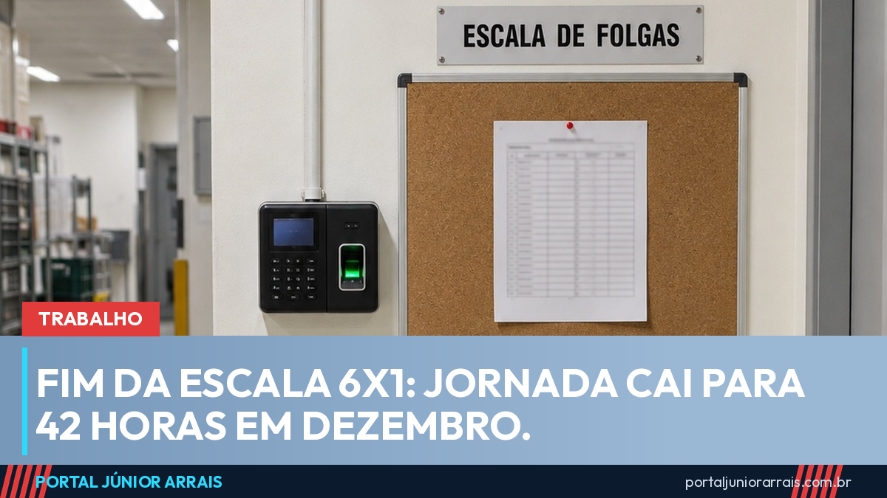

Fim da escala 6x1 está na Constituição: jornada cai para 42 horas em dezembro

A escala 6x1 saiu da Constituição. A Emenda Constitucional 141, promulgada pelo Congresso em 16 de outubro de 2026, assegura dois dias de descanso remunerado por semana, um deles de preferência no domingo, e reduz a jornada máxima sem corte de salário. A mudança vem em etapas: 42 horas semanais em meados de dezembro de 2026 e 40 horas um ano depois, em dezembro de 2027.
O portal acompanhou a proposta desde a Câmara e mostrou quando o Senado adiou a votação para depois das eleições. Em 14 de outubro, os senadores aprovaram o texto em dois turnos, por 75 votos a 1, e dois dias depois a emenda foi promulgada e publicada no Diário Oficial.
O que muda e quando
- Até meados de dezembro de 2026: continua valendo o limite atual de 44 horas por semana;
- Dois meses depois da publicação (meados de dezembro de 2026): o teto cai para 42 horas e passam a valer as duas folgas semanais;
- Um ano depois dessa primeira etapa (dezembro de 2027): o teto chega a 40 horas semanais, com no máximo 8 horas por dia.
Na fase das 42 horas, a conta não fecha em cinco dias de 8 horas. Por isso a emenda permite que acordo ou convenção coletiva aumente um pouco a jornada diária para encaixar as duas horas que sobram. Se forem divididas por igual, dá cerca de 8 horas e 24 minutos por dia, de segunda a sexta. Hora trabalhada além do limite continua sendo hora extra, paga com adicional. Veja como isso funciona na matéria sobre hora extra e banco de horas.
O salário não pode cair
A emenda proíbe qualquer redução salarial por causa da jornada menor, nos contratos que já estão em vigor, e a regra vale também para os pisos das categorias. Quem já trabalha 40 horas ou menos não tem a jornada reduzida de novo.
Quando a escala 6x1 ainda pode existir
A escala com uma folga só não fica proibida em todos os casos. Em caráter excepcional, uma convenção ou acordo coletivo, negociado com o sindicato, pode criar um regime de compensação. Mesmo assim, o trabalhador precisa ter, na média do mês, dois dias de descanso por semana, e pelo menos um dia de folga a cada semana.
Cláusulas de acordos e convenções que contrariem a nova regra perdem o efeito dois meses depois da publicação. Ou seja: a partir de dezembro, escala combinada antes da emenda não vale mais se não respeitar as duas folgas.
Quem fica de fora
- Quem tem diploma de nível superior e ganha 2,5 vezes o teto do INSS ou mais (R$ 21.188,87 por mês em 2026): para esse grupo, a redução de jornada só vale se o patrão concordar ou se houver previsão em acordo coletivo;
- Servidores públicos: a emenda não mexe na jornada de quem tem cargo na União, nos estados e nos municípios;
- Empresas contratadas pelo poder público: os contratos em vigor têm até um ano para serem ajustados antes da redução;
- Microempreendedores e pequenas empresas: uma lei complementar ainda pode criar regras de transição para elas, desde que os empregos sejam mantidos. Essa lei ainda não existe.
É falso que o governo voltou atrás
Depois do segundo turno, circularam nas redes mensagens dizendo que o governo teria desistido do fim da escala 6x1 ou que categorias seriam excluídas. Em 27 de outubro, a Secretaria de Comunicação Social da Presidência desmentiu: o texto da emenda não mudou, e o Executivo não pode vetar nem alterar uma emenda à Constituição já promulgada pelo Congresso. O que segue em conversa com os setores é só a forma de implantar as novas regras.
Cuidado com golpe
Mudança grande na lei trabalhista atrai golpista. Já há quem ofereça "cadastro" para entrar na nova jornada, cobre taxa adiantada por um suposto cálculo de horas atrasadas ou mande link pedindo CPF, senha e foto de documento. Ninguém precisa se inscrever em lugar nenhum: a regra vale para todos os contratos de carteira assinada, direto pela Constituição.
Se a empresa não cumprir as duas folgas ou o novo limite de horas depois de dezembro, ou se você tiver dúvida sobre a sua escala, procure um profissional de sua confiança para analisar o contrato, os cartões de ponto e o acordo coletivo da sua categoria.
Fontes oficiais
- Emenda Constitucional nº 141, de 16 de outubro de 2026 (jornada de 40 horas, duas folgas semanais e prazos de transição)
- Agência Senado: Congresso promulga o fim da escala 6x1
- Agência Brasil: governo alerta sobre notícias falsas (Secom, 27/10/2026)
Conteúdo informativo — não substitui orientação individualizada sobre o seu caso.
Júnior Arrais · Editor do Portal Júnior Arrais
Comunicador de Ubá (MG). Escreve todos os dias sobre benefícios sociais, INSS, trabalho e economia do dia a dia, a partir do Diário Oficial, de portarias e de fontes oficiais, em linguagem simples. Conheça a linha editorial e a política de correções do portal.